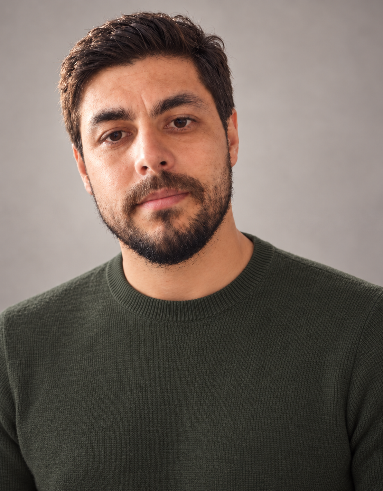

Masterstudium
Studiengang, Fachhochschule und Zeitraum ergänzen.
ÜBER MICH
Student im Masterstudium.
Ich interessiere mich für technische Zusammenhänge und lerne gerne durch praktische Aufgaben. Hier stelle ich meinen bisherigen Weg und ausgewählte Arbeiten vor.
Kurzprofil · EntwurfMeinen Lebenslauf ansehen ↓
✎ Einige Angaben sind noch offen. Platzhalter und Texte mit „Entwurf“ ergänzen wir später.
Mein Studium und mein bisheriger Weg.
Studiengang, Fachhochschule und Zeitraum ergänzen.
Abschluss, Institution und Zeitraum ergänzen.
Hier ergänzen wir relevante Tätigkeiten, Praktika oder Berufserfahrung.
Diese Bereiche können wir mit konkreten Beispielen aus deinem Studium und deiner Arbeit füllen.
Auswahl · EntwurfRelevante Lehrveranstaltungen und nächste Lernziele ergänzen.
Hier können später Dokumente verlinkt werden. Noch keine Dateien hinterlegt.
Bei Bedarf ergänzen wir Referenzpersonen nach deren Zustimmung.
Ich möchte Aufgaben verstehen, sorgfältig bearbeiten und aus Rückmeldungen lernen. Entwurf
Vorgesehene Erklärung: Eigene Arbeiten, Beiträge anderer Personen und Quellen werden im Portfolio gekennzeichnet. Eine Weiterverwendung erfolgt nach Absprache. Entwurf
Ein kleiner Einblick in das, woran ich arbeite.
Hier kommt eine kurze Beschreibung meines Praxisprojekts: die Fragestellung, mein Beitrag und das, was ich dabei gelernt habe.
Projektbeschreibung · PlatzhalterDas Thema und das Ziel des Projekts ergänzen.
Die eigenen Aufgaben und verwendeten Methoden ergänzen.
Erkenntnisse und nächste Schritte ergänzen. Bilder und Arbeitsproben können später hinzukommen.
Platz für eine ausgewählte Aufgabe oder Studienarbeit, die meine Interessen und meinen Lernfortschritt zeigt.
Titel und Aufgabenstellung einer tatsächlichen Arbeit ergänzen.
Vorgehen, Ergebnis und verwendete Quellen ergänzen.
Du möchtest mit mir in Verbindung bleiben?